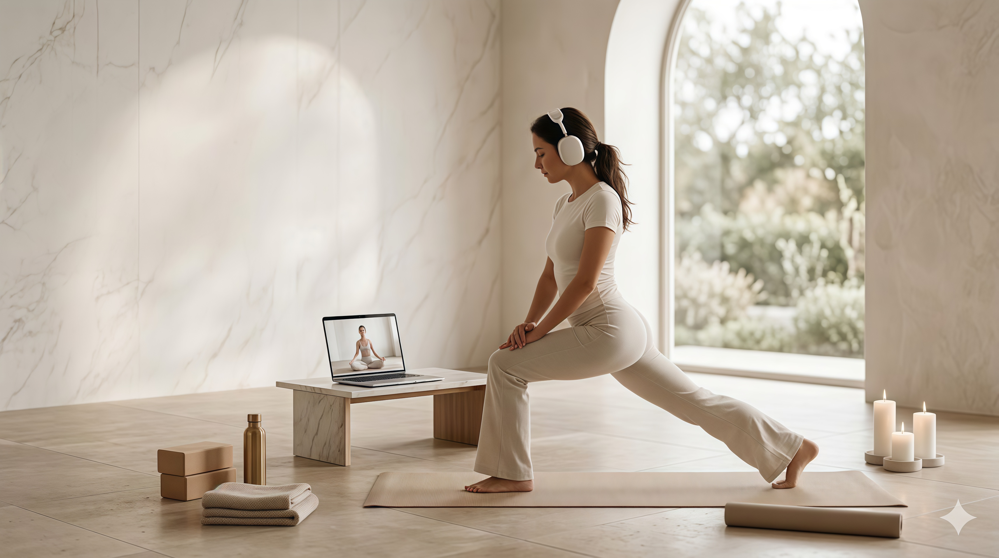
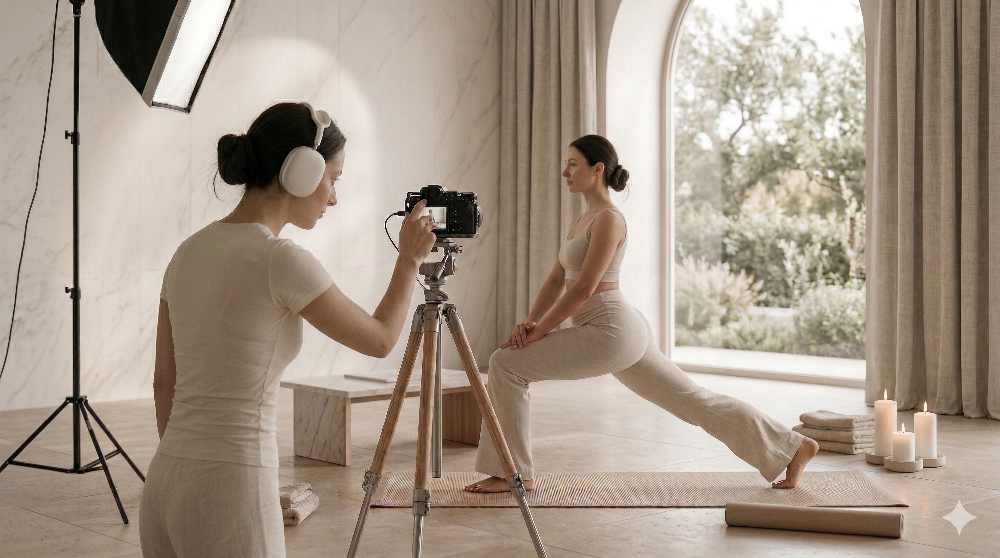

Nasz zespół

Małgorzata Kowalska

Agnieszka Wiśniewska

Karolina Nowak

Ewa Zielińska


W YogaFlow AI wierzymy, że droga do wewnętrznego spokoju powinna być tak indywidualna, jak Ty sama. Naszym celem było stworzenie przestrzeni, w której starożytna tradycja jogi spotyka się z najnowocześniejszą technologią chmurową. Dzięki wykorzystaniu sztucznej inteligencji, nasza platforma nie tylko dostarcza treningi wideo, ale staje się Twoim osobistym przewodnikiem, który analizuje Twoje postępy i samopoczucie.
Małgorzata Kowalska
Agnieszka Wiśniewska
Karolina Nowak
Ewa Zielińska
Absolutnie nie. YogaFlow AI oferuje programy na każdym poziomie zaawansowania – od całkowicie początkujących osób (Level 0) po zaawansowanych joginów. Nasz asystent AI pomoże Ci zacząć od podstaw.
Nasz algorytm analizuje Twoje dzisiejsze samopoczucie, poziom energii oraz ewentualne ograniczenia fizyczne (np. ból pleców). Na tej podstawie błyskawicznie przeszukuje bazę wideo i wybiera zestaw ćwiczeń, który będzie dla Ciebie najbardziej efektywny.
Tak, YogaFlow AI to w pełni responsywna platforma chmurowa. Możesz z niej korzystać na laptopie, tablecie lub smartfonie, ciesząc się płynnością działania i wysoką jakością wideo w każdym miejscu.
Oczywiście. W Twoim panelu użytkownika znajduje się sekcja „Notatki i Rezultaty”, gdzie możesz monitorować swoją ścieżkę rozwoju, zapisywać odczucia po treningach i śledzić statystyki swojej regularności.